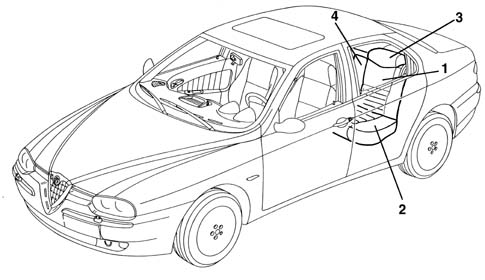
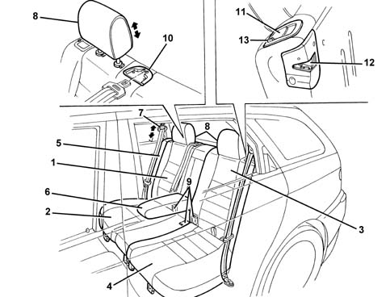
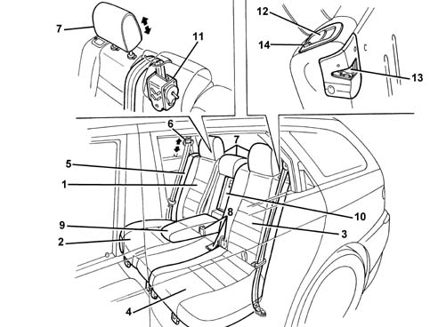

Introduction - REAR SEATS
- Path
- Descriptions > 70 FITTINGS > 7050 REAR SEATS > Introduction - REAR SEATS
- Kind
- system description
- Applies to
- all engines; all production periods
- Interactive page
- https://sloeber94.github.io/elrnDB-a156/en/#/3239244
Applies to: all engines; all production periods
GLOSSARY
Passive safety
This is the collection of measures which interact to reduce the consequences to the occupants of the vehicle after an accident. The following come into this category: the stratified windscreen, the collapsible steering column, the door opening cables, the material from which the steering wheel is made, the absence of dangerous projections and corners in the dashboard, the structure of the pedals, the shape and resistance of the seats, the head restraints, the seat belts (also with pre-tensioners), the air bags and the bodyshell with differentiated resistance, in other words the passenger survival cell which is as rigid as possible and the front and rear sections, on the other hand, with crumple zones designed to gradually absorb the energy of the impact.
Submarining
This is the phenomenon which can occur in the case of a frontal impact. Even with the seat belt fastened, the body of the occupant of the sea tends to slide under the belt.
VIEW OF ASSEMBLY
-

1, Squab 2, Cushion 3, Head restraint 4, Armrest
DESCRIPTION
The rear seats have been designed with optimum comfort and safety in mind guaranteeing an ideal position especially in terms of comfort on long journies.
The backrest is secured to a panel with two impact bars in order to improve the degree of protection afforded to passengers in the case of a rear impact.
To improve the degree of passive safety, there is a crossmember on top of the floor and underneath the seat which is designed, together with the inertia reel seat belts, to restrict the phenomenon of submarining in the case of a frontal impact.
Applies to: all engines; all production periods; only with equipment: Station Wagon
SPECIFICATIONS
The new rear seat, as usual split and folding, offers secure wrap-around support. Thanks to the ceiling profile and seating design, excellent rear habitability is ensured.
Two options are offered for the rear seat, depending on the version of car.
BASIC VERSION
The rear seat folds down separately (60% - 40%), with side fillers anchored to the bodywork.
The squab has a central armrest which, when lowered, gives access to a flap which communicates with the luggage compartment. This space allows long objects to be transported without having to lower the squab. On request, the space can be fitted with a bag for transporting skis.
The side seat belts are height adjustable, as are the two headrests.
At the base of the squab there are the mountings for the seat belt buckles. At the top of the squab, there is an embellishment for securing the central seat belt section, when not in use.
To fold the seat, proceed as follows:
- Remove the winder with luggage-covering curtain.
- Tilt the cushion.
- Remove the rear head restraints and secure them in their specific seats in the cushion.
- Operate the side locks and fold down the squab until a single load compartment, comprising the luggage compartment, is obtained. The side locks have a sight check system for checking that the squab is correctly engaged.

1, Squab folding 60% 2, Cushion folding 60% 3, Squab folding 40% 4, Cushion folding 40% 5, Fixed side filler 6, Central armrest 7, Height-adjustable side seat belts 8, Height-adjustable head restraints 9, Seat belt buckle mountings 10, Embellishment for securing central seat belt section 11, Lever for releasing squab lock 12, Squab lock 13, Correct engagement indicator
DELUXE VERSION
The seat is structurally the same as the basic seat; it differs by the presence of the third head restraint and the winder for the central seat belt.

1, Squab folding 60% 2, Cushion folding 60% 3, Squab folding 40% 4, Cushion folding 40% 5, Fixed side filler 6, Height-adjustable side seat belts 7, Height-adjustable head restraints 8, Seat belt buckle mountings 9, Central armrest 10, Flap communicating with luggage compartment (for skis) 11, Central seat belt winder 12, Lever for releasing squab lock 13, Squab lock 14, Correct engagement indicator